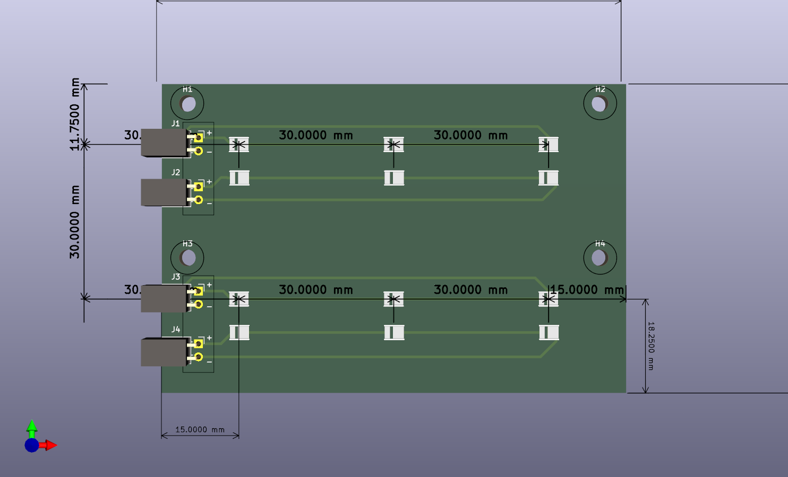
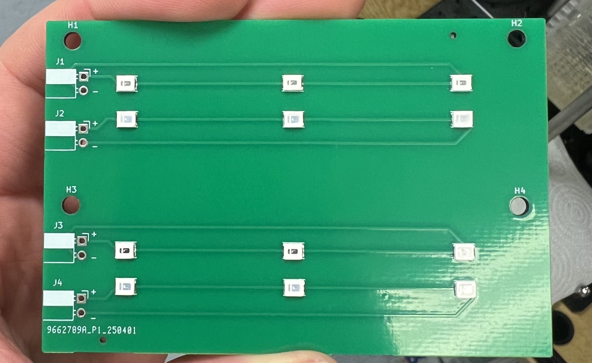
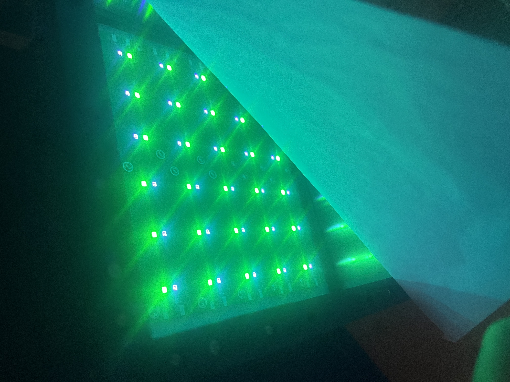

Custom PCBs
This page documents the custom PCBs designed in KiCad for multi-wavelength LED stimulation and driver interfacing.
1. Standard LED Array Board (LED_board)
- Location:
Hardware/LED_board/| Status: Active - Files:
LED_board.kicad_sch,LED_board.kicad_pcb,LED_board.step,production/ - Acknowledgements: Board is based on an earlier prototype designed by Andre Maia Chagas.

Figure: KiCad 3D layout of standard dual-channel LED array board with dimensions and grid pitch.
Figure: Assembled dual-channel LED array PCB showing the 4 LED lines, solder pads for J1–J4, and mounting holes H1–H4.
Figure: Multiple tiled LED boards mounted inside the panel enclosure and illuminated beneath the optical diffuser sheet.Design & Current Implementation
The board provides wide-field visual stimulation using multiple equally-spaced LED lines:
- Layout: 4 lines of LEDs (2 lines per colour, interleaved), with 3 series LEDs per line (12 LEDs total, running at \(+12\,\text{V}\)).
- Spacing: \(3\,\text{cm}\) (\(30\,\text{mm}\)) pitch between lines, matching the spacing across adjacent tiled boards.
- Mounting: Through-holes for M3 standoffs to attach securely to the aluminium backplate / heatsink.
- Connectors: 4 separate 2-pin (\(2.54\,\text{mm}\)) headers — one dedicated connector per LED line (8 wires total per board back to the driver). Headers can be straight or right-angled, and can be mounted on the front or reverse side of the PCB to route cables cleanly out the back of the backplate.
- Current Limiting: External (requires off-board resistors on the driver board).
Future Improvements
- On-Board SMD Resistors: Add dedicated surface-mount ballast resistors (1206 footprint) on each line to balance branch currents directly on the PCB and eliminate off-board resistors.
- Single Consolidated Connector: Replace the 4 separate 2-pin headers with a single multi-pin connector (e.g. 4-pin JST-XH). A common \(+12\,\text{V}\) anode rail powers all lines, branching into separate low-side return paths per colour for independent PWM modulation (reducing wiring from 8 to 3–4 wires).
- Modular Daisy-Chaining: Add pass-through edge connectors so arbitrary boards can be tiled together with parallel electrical connections, preserving the \(3\,\text{cm}\) pitch without extra cable runs.
2. Experimental & In-Development Boards
3-Colour LED Array Board (LED_board_humans)
- Location:
Hardware/LED_board_humans/| Status: ⚠️ WIP - Experimental 3-channel (3-colour) panel redesign with optimized routing. (Note: Unrelated to the wearable glasses setup).
Constant Current Driver Board (Constant_current_driver)
- Location:
Hardware/Constant_current_driver/| Status: ⚠️ WIP (Inactive) - Prototype driver board. Current setups use the low-side transistor circuit described in Circuit & Driver Design.
3. Fabrication
Gerber files and drill maps are in the respective production/ directories, ready for fabrication (e.g. JLCPCB, PCBWay).